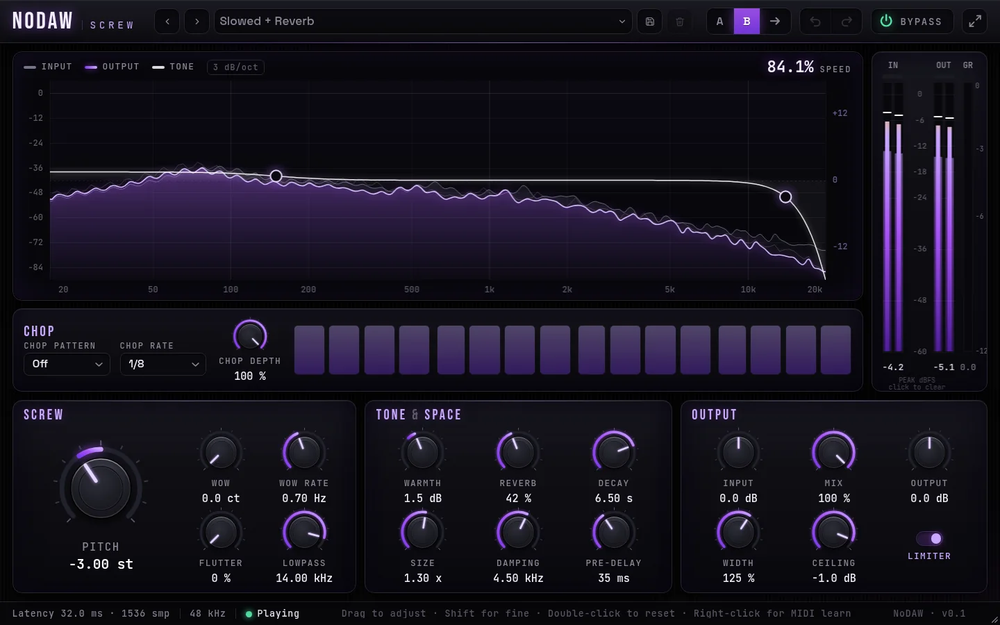
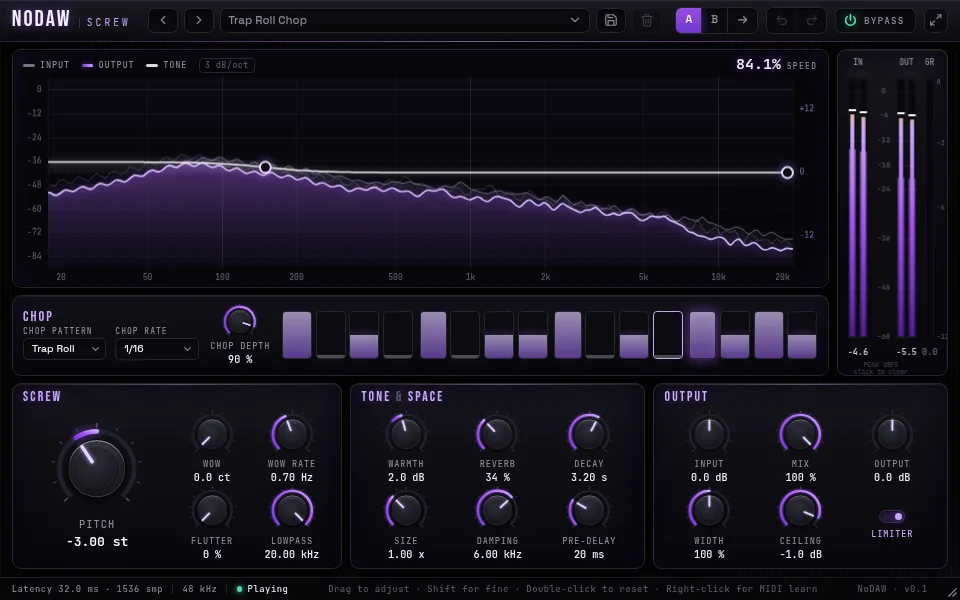
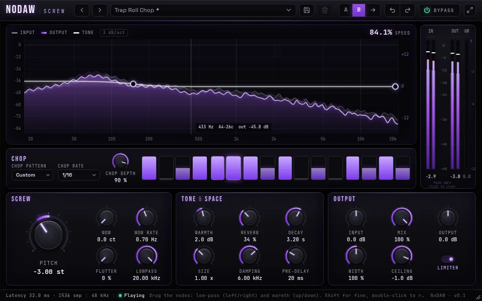
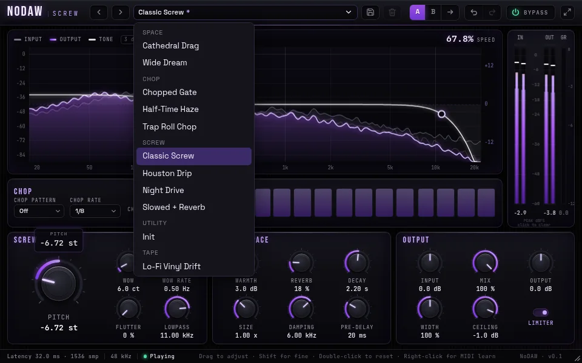
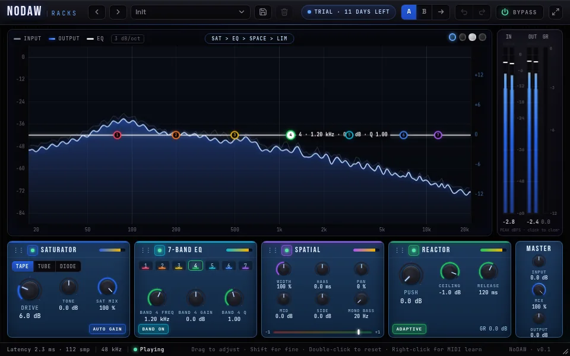
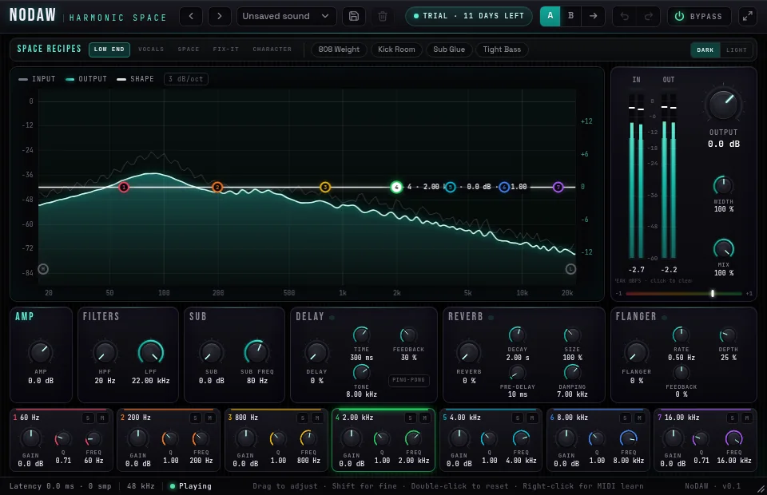
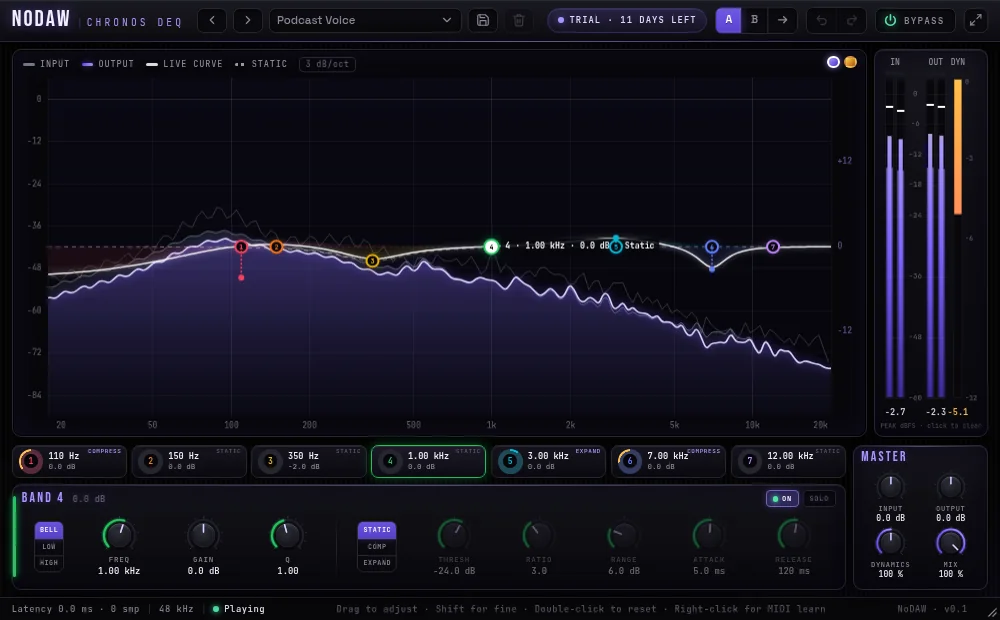
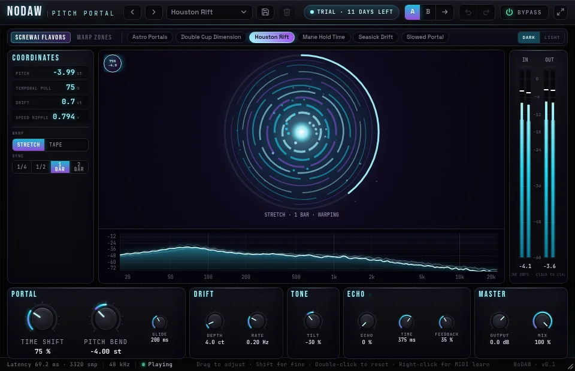
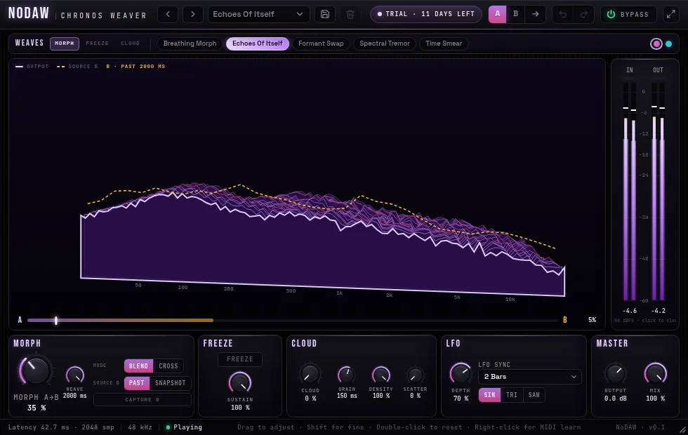
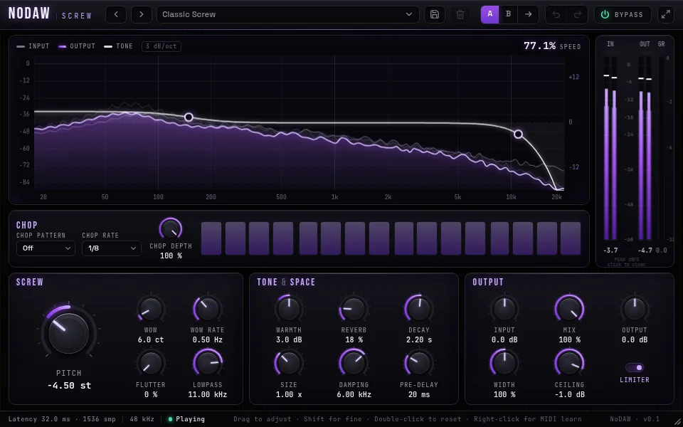

A real-time chopped & screwed effect for your DAW: pitch down, tape wobble, a chop gate you draw, lush reverb and stereo width, held under a true-peak limiter. Built by NoDAW Labs, the team behind HalfScrew.


Click and drag the step gate, pick a rate, set the depth. Your custom pattern saves with the session.

160-band input/output spectrum at 60 fps with peak hold and a cursor frequency/dB readout, plus in/out and limiter meters.

12 factory presets, save your own, A/B compare, undo/redo, and right-click MIDI learn on any knob.
Pitch, wobble and limiter latency is reported to the host, and the dry path is delay-matched so Mix at 0% stays phase-aligned.
No allocation or locks in the audio callback. Buffers are sized up front; denormals are guarded.
Smoothers snap on load, so a saved session opens at exactly the sound you left.
On the Linux headless build: Steinberg VST3 validator 47/47 passed; clap-validator 36 passed, 0 failed, 8 skipped.

Modular channel rack: four modules in a reorderable chain, then a master section.

Amp, 7-band EQ, sub shelf, filters and three parallel returns.

Seven bands, each with its own dynamics mode.

Tempo-synced time warp with independent pitch shift.

Spectral morph, freeze and cloud with a 3D spectrum view.
